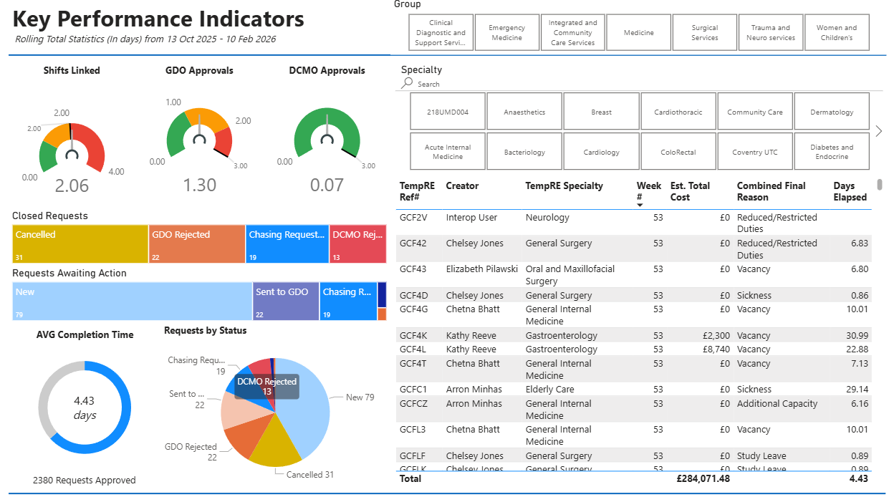
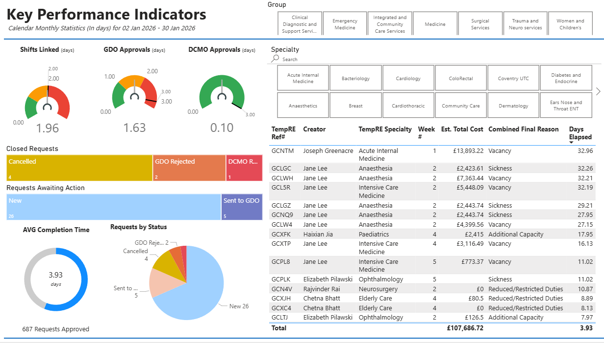
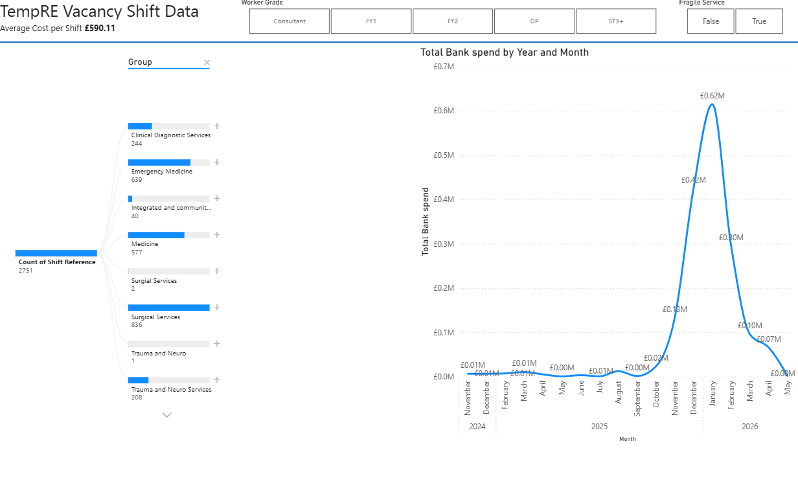
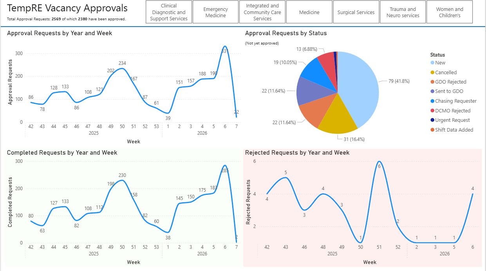
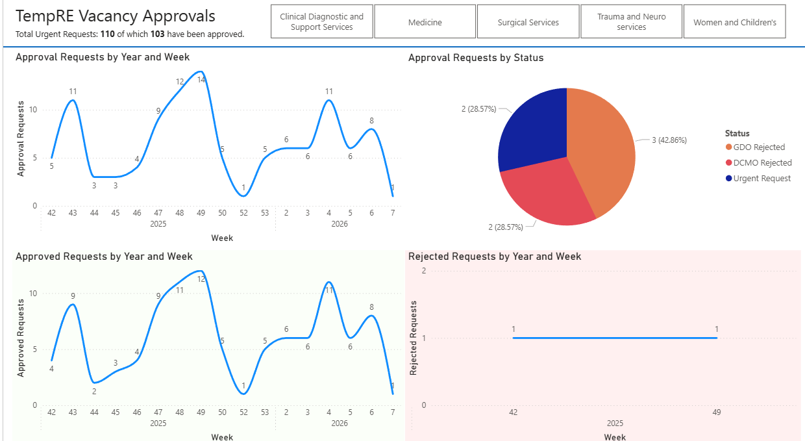
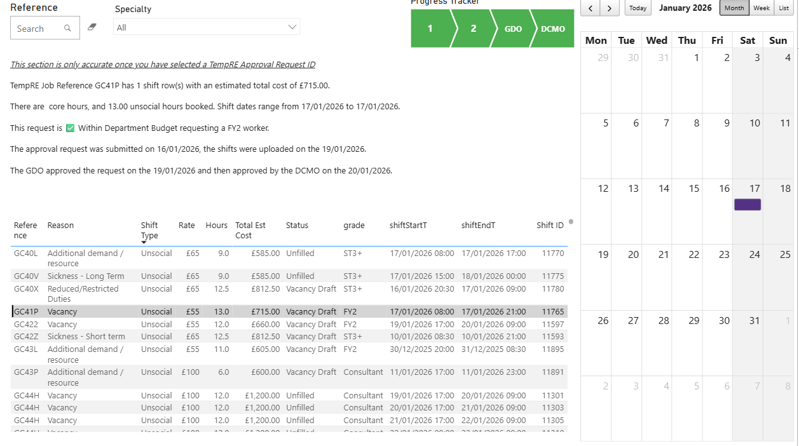
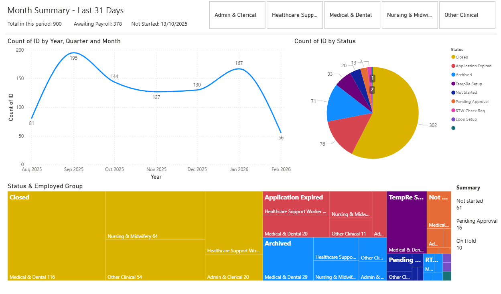
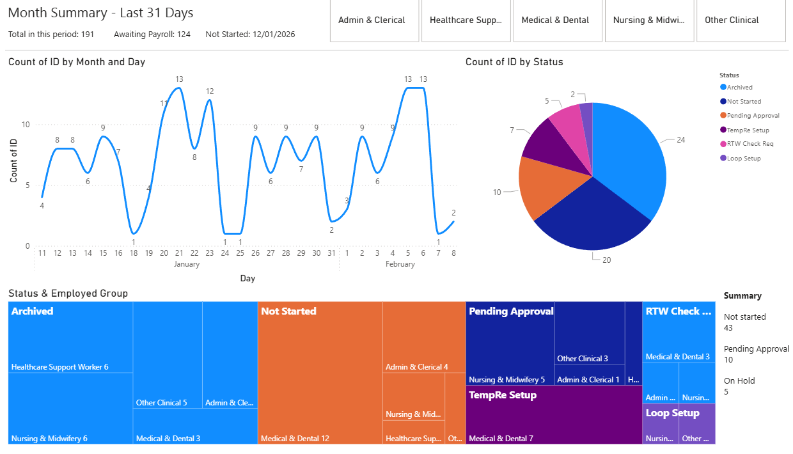
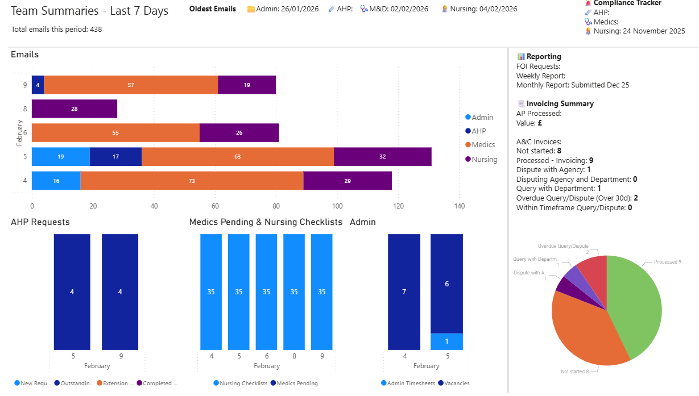

Dashboard Title
Detailed description of this Power BI visual, DAX techniques, and operational insights.
Data-focused project professional with 5+ years of experience transforming complex healthcare and operational datasets into intuitive, high-impact Power BI dashboards. Proficient in advanced DAX modeling, KPI gauge tracking against SLAs, and decomposition trees for root-cause analysis that empower clinical and executive stakeholders to independently make data-driven decisions.
Overhauled legacy paper workflow (71% user difficulty) into a 100% trackable automated system using Forms, SharePoint & Power Automate.
Screenshots of production Power BI reporting suites developed for healthcare operations, workforce planning, and financial spend governance. Click on any dashboard to inspect in the high-resolution lightbox.

KPI & SLAsHigh-level executive dashboard tracking SLA compliance across clinical divisions. Features 3 custom DAX KPI gauges (Shifts Linked 2.06d, GDO Approvals 1.30d, DCMO Approvals 0.07d) and root-cause analysis on approval bottlenecks.

Monthly KPIsGranular view filtering by Clinical Group and Specialty (e.g. Anaesthetics, General Surgery, Acute Internal Medicine). Identifies urgent vs standard turnaround and days elapsed per request.

Root Cause & FinanceAI Decomposition Tree allows directors to explore shifts by clinical specialty, grade (Consultant, FY1, FY2, ST3+), and fragility status. Interactive trend line visualizes seasonal surge spend across 2024–2026.

Pipeline VolumeProvides macro-level operational oversight for executive directors. Compares weekly approval request volumes against completed requests and flags bottleneck statuses requiring managerial intervention.

Critical CareMonitors fast-track clinical requests requiring urgent escalation to General Duty Officers (GDO) and Deputy Chief Medical Officers (DCMO), tracking turnaround against strict critical-care timelines.

Workflow AuditGranular drill-through interface showing individual job reference shift records, rates (£55-£100/hr), unsocial hour splits, automated budget check validation, and calendar heatmap scheduling.

Treemaps & IntakeHigh-volume operational dashboard monitoring Bank/Locum onboarding. Treemap visualization segments applicants by staffing group, highlighting status flows from Application to TempRE Setup and Payroll completion.

Daily TrackingProvides granular daily visibility into pending bottlenecks, Right-to-Work (RTW) verifications, and onboarding statuses to ensure clinical staffing pipelines are never stalled.

Team OperationsCross-team operational dashboard highlighting oldest unaddressed communications, checklist backlogs, FOI weekly reporting, and invoice dispute resolution against agency SLAs.
Detailed case studies showcasing business challenges, technical actions, and measurable outcomes delivered across healthcare, corporate, and event operations.
Directed the complete digital overhaul of a legacy, paper-based "retire-and-return" pathway that previously suffered from misplaced documentation, poor cross-departmental communication, and low user satisfaction (71% user difficulty; 32% manager satisfaction). Transformed the manual workflow into a streamlined, transparent, and user-friendly automated system.
Developed and implemented an end-to-end multi-stage digital system to automate the TempRE vacancy approval process using Agile methodology. Replaced an inefficient paper process to create a robust, auditable trail and resolve persistent issues with missing data, lost forms, and unapproved shifts.
Engineered an end-to-end reporting suite in Power BI that translates complex operational healthcare datasets into intuitive, high-impact executive dashboards. Built with scheduled automated data refreshes, user-centric drill-throughs, and advanced DAX modeling.
Led the complete overhaul of the Bank and Locum application process, which previously took approximately 30 days to complete, suffered frequent losses, and left candidates without updates. Replaced it with a rapid 5-day automated workflow.
Architected and deployed a web-based multi-stage approval system for Trust-wide recruitment vacancies. Digitized paper submission, automated complex dynamic approval routing, and established live audit tracking.
Devised, modeled, and implemented a comprehensive Excel-based clinical staff scheduling solution to replace an expensive commercial tool, delivering substantial recurring annual cost savings while optimizing resource allocation during COVID-19.
Led the full lifecycle implementation of CurrentRMS customer and rental management software, resolving critical inefficiencies in equipment tracking, scheduling, and client quoting.
A comprehensive overview of technical tools, methodologies, and analytical proficiencies developed through hands-on project delivery.
Consistent career progression delivering high-impact business improvements, data analytics, and operational systems.
Lead digital transformation initiatives across cross-functional hospital divisions (Payroll, HR, Clinical Leads). Coordinate project milestones, design automated workflows, and build interactive Power BI dashboards that enhance operational decision-making.
Directed data analysis, clinical resource allocation, and performance reporting. Engineered forecasting models to optimize staffing through shifting COVID-19 pandemic demands.
Led the implementation of a modern cloud rental management system (CurrentRMS), maintaining CRM accuracy, stock databases, and IT infrastructure.
Formal qualifications combining professional project management credentials and technical skills.
Comprehensive 6-course professional program covering project initiation, execution, Agile/Scrum methodologies, and risk governance.
Intensive digital skills program focusing on data structures, interactive systems, and iterative design.
Specialized enterprise PM tool training for milestone tracking, resource forecasting, and risk management.
NHS project delivery frameworks, healthcare governance, and cross-departmental stakeholder alignment.
Business communication, document control, office systems, and administrative compliance.
8x GCSEs including Maths, English & Science; 2x BTEC Level 2 Merit in Media & IT; NCS Graduate.
Whether you're looking for a Project Support Officer, Power BI Data Analyst, or Digital Transformation Specialist, I am ready to discuss how I can bring measurable value to your team.